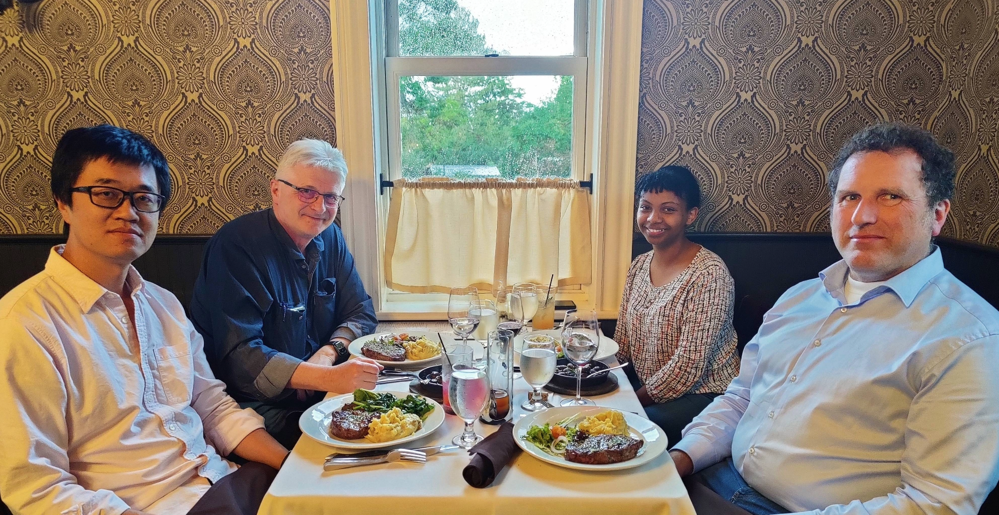

06/2023
{kind=link}
I joined CableLabs as a Wireless RF Propagation Intern.
Wireless Research Team at Dinner
Hello! My name is Ruth. I am a fourth year Ph.D. candidate in Electrical and Computer Engineering at New York University's Tandon School of Engineering. I research the wireless physical layer as part of the NYU Wireless center where I am advised by Prof. Thomas L Marzetta. I completed my B.S. in Electrical Engineering (Computer Science Minor) at NYU Abu Dhabi and M.S. in Electrical Engineering at NYU Tandon.
My research focuses on the physics of communication theory. I am interested in wave propagation, information theory, and machine learning algorithms for wireless communication. I previously worked on virtual reality and haptic feedback for telepresence and teleoperation. Besides research, I like learning languages, listening to podcasts, and playing with mechanical puzzles.
Wireless Research Team at Dinner

16 best paper awards, ~1100 accepted papers, ~2800 submissions
Telegram chatbot project funded by Mozilla Foundation and NVIDIA.
Top 7% worldwide from internal best intern competition, placed 4th

Radio Research Team - Mentors and Interns pictured at Claude Shannon's statue


While the heat equation has been extensively studied, heat conduction has not been studied as a means of communication until recently. Recent literature focusing on covert channels shows the feasibility of using thermal conduction to communicate information. Since heat conduction is modelled by a linear partial differential equation, it can be analyzed as a linear system with an input heat source and output temperature distribution. The magnitude of the thermal channel's frequency response is an exponentially decaying function of frequency. The thermal channel's capacity increases when the total power increases, similar to typical communication based on electromagnetic waves. Uniquely however, the thermal channel's effective bandwidth is constrained by the total power since a water-filling algorithm determines a cutoff frequency. Additionally, the quadratic nature of the heat equation presents a novel quadratic scaling of the channel capacity. Scaling space by a factor of 2 and time by 4 improves the channel capacity by a factor of 4. This implies that scaling space down from centimeter to micrometer domain improves the channel capacity by a factor of 10^8. The thermal channel presents various novel qualities and a possible exciting application for intra-chip communication.

Tactile Internet promises a widespread adoption of haptic communication over the Internet. However, as haptic technologies are becoming more diversified and available than ever, the need has arisen for a plug-and-play (PnP) haptic communication over a computer network. This paper presents a system for enabling PnP communication of heterogeneous haptic interfaces. The system is based on three key features: (i) a haptic metadata to make haptic interfaces self-descriptive, (ii) a handshake protocol to automatically exchange haptic metadata between two communicating devices, and (iii) a multimodal (haptic-audio-visual) media communication protocol. Implemented using WebRTC, the PnP communication is evaluated using a Tele-Writing application with two heterogeneous haptic interfaces, namely Geomagic Touch and Novint Falcon. Our findings demonstrate the potential of the system to be employed in any Tactile Internet scenario.

The use of haptic technologies has recently become immensely essential in Human-Computer Interaction to improve user experience and performance. With the introduction of tactile feedback on a touchscreen device, commonly known as surface haptics, several applications and interaction paradigms have become a reality. However, the effects of tactile feedback on the preference of 2D images in visuo-tactile exploration task on touchscreen devices remain largely unknown. In this study, we investigated differences of preference score (the tendency of participants to like/dislike a 2D image based on its visual and tactile properties), reach time, interaction time, and response time under four conditions of feedback: no tactile feedback, high-quality of tactile information (sharp tactile texture), low-quality of tactile information (blurred tactile texture), and incorrect tactile information (mismatch tactile texture). The tactile feedback is rendered in the form of roughness that is simulated by modulating the friction between the finger and the surface and is derived from the 2D image. Thirty-six participants completed visuo-tactile exploration tasks for a total of 36 trials (3 2D images x 4 tactile textures x 3 repetitions). Results showed that the presence of tactile feedback enhanced users' preference (tactile feedback conditions were rated significantly higher than the no tactile feedback condition for preference regardless of the quality/correctness of tactile feedback). This finding is also supported through results from self-reporting where 88.89% of participants preferred to experience the 2D image with tactile feedback. Additionally, the presence of tactile feedback resulted in significantly larger interaction time and response time compared to the no tactile feedback condition. Furthermore, the quality and correctness of tactile information significantly impacted the preference rating (sharp tactile textures were rated statistically higher than blurred tactile and mismatched tactile textures). All of these findings demonstrate that tactile feedback plays a crucial role in users' preference and thus motivates further the development of surface haptic technologies.

The rapidly rising interest in Tactile Internet (TI) has lead to the inception of IEEE 1918.1 working group (WG) with a primary objective of envisioning and standardizing various modules crucial for the realization of TI. One of the several core activities of the WG is to standardize haptic codecs for human-in-the-loop applications. This subsumes standardization of haptic handshake scheme for orchestration between heterogeneous nodes for seamless TI interaction. To this end, we present a novel haptic handshake protocol that facilitates exchange of haptic metadata between TI nodes through Tactile Internet Metadata (TIM) scheme. Through WebRTC-based implementation and real haptic devices, we provide a proof of concept of the proposed protocol. The mean and the standard deviation of the handshake latency is measured to be 47.25 ms and 23.38 ms, respectively, thereby making it a strong candidate for employment in TI applications. Finally, we shed light on future refinements to our implementation.


{kind=link}
{kind=link}